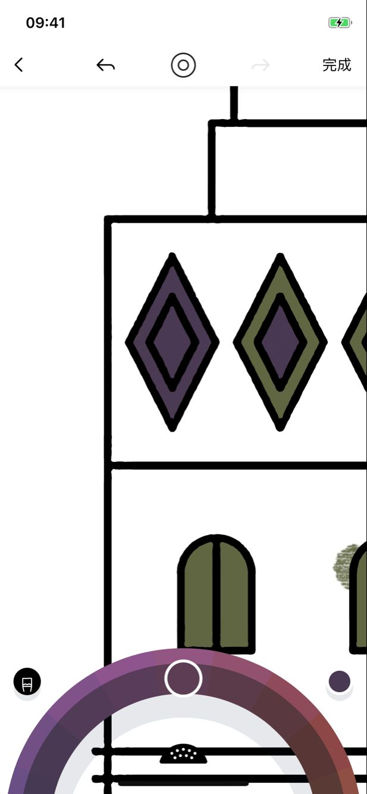
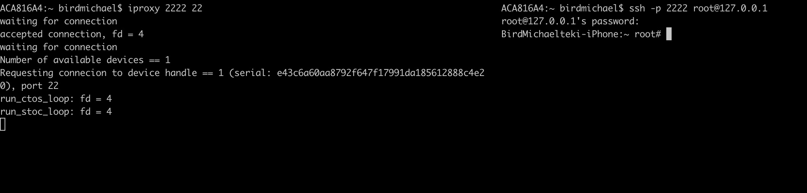
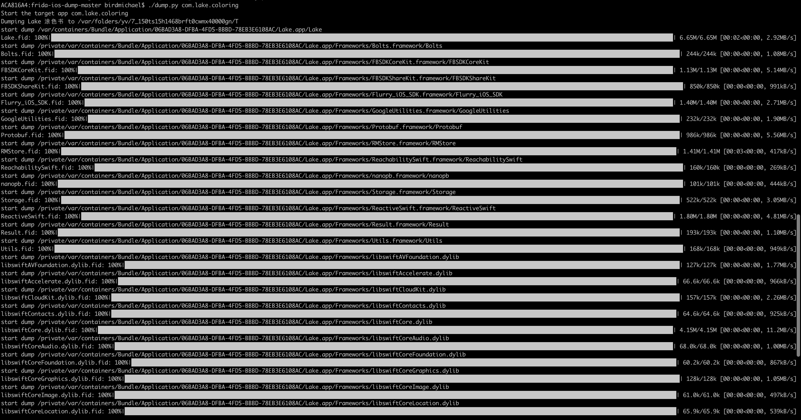

Lake逆向之路
前提
无意中看到了一个很有意思的APP，传说是苹果2017设计奖。很多地方的控件都不知道如何实现的。于是有了想逆向能不能查看一些思路。
比如：

这个下面的选色控件：支持横向滚动改变颜色，纵向滚动改变明度。点击滑动到中间区域，还有各种动画。
咋眼一看感觉好像不是很难，但是在实际实现中遇到了很多困难。
于是开始了Lake的逆向之旅。
越狱
工具
Electra官网：点此连接
越狱工具下载地址：点此连接（IPA文件）
越狱工具安装工具：点此连接（Cydia Impactor）
注意IPA版本。最新版本支持为iOS 11.2 – 11.3.1。我是11.1.2 在历史下载的Electra for 11.0-11.1.2
教程
1、下载Cydia Impactor后，解压运行“Impactor”。把之前下载好的IPA文件“Electra1131 ”拖进cydia Impactor里面（过程没有变化提示，会自动弹出输入苹果账号框）；
2、然后根据提示输入自己的Apple ID账号与密码（需关闭双重验证，部分账号无法关闭双重验证，可以改用其他账号）；
3、桌面出现名为 Electra 的App，打开“设置->通用->描述文件”找到描述文件，点击信任；
4、将iOS调至飞行模式，运行Electra App，点击“Jailbreak”按钮，主屏出现Cydia之后，即可关闭飞行模式，越狱成功。（实际好像不用飞行模式）
5、之后可以在桌面的出现Cydia，越狱成功。
砸壳
最早的砸壳工具是stefanesser写的dumpdecrypted，通过手动注入然后启动应用程序在内存进行dump解密后的内存实现砸壳，这种砸壳只能砸主App可执行文件。
对于应用程序里面存在framework的情况可以使用conradev的dumpdecrypted，通过_dyld_register_func_for_add_image注册回调对每个模块进行dump解密。
但是这种还是需要拷贝dumpdecrypted.dylib，然后找路径什么的，还是挺麻烦的。所以笔者干脆放到MonkeyDev模板变成一个tweak的形式dumpdecrypted，这样填写目标bundle id然后看日志把文件拷贝出来就可以了。
但是还是很麻烦，需要拷贝文件自己还原ipa，然后有了KJCracks的Clutch通过posix_spawnp创建进程然后dump直接生成ipa包在设备，可以说是很方便了。这个是工具在使用的时候大部分应用会出报错，此外生成的包还需要自己拷贝。
准备工具
frida安装Mac安装frida:
sudo pip install frida手机安装frida:添加源
build.frida.re，并且安装iproxy安装可以查看之前一篇文章：iproxy-通过USB使用SSH连接iOS设备
frida-ios-dump在
Github根据README.md下载并安装：Github地址。
过程
mac端在克隆frida-ios-dump下运行
1 | sudo pip install -r requirements.txt --upgrade |

Mac终端通过USB连接iOS设备。
新建一个
iTerm窗口输入iproxy 2222 22,会得到waiting for connection的反馈。说明等待连接了。然后再新建一个
iTerm窗口输入ssh -p 2222 root@127.0.0.1并填写默认密码alpine。

到此为止，已经成功连接上了设备，开始准备一键砸壳，感谢alonemonkey大神带来了毫无体验之旅。
- 一键砸壳
回到步骤1那个窗口输入./dump.py -l
1 | 912 App Store com.apple.AppStore |
因为 Display name又是中文，又是英文，又是空格的，个人建议是通过Bundle identifier，这样准确点。
然后开始砸壳吧~~输入./dump.py com.lake.coloring,其中的Bundle identifier你是通过上面查到的。于是开始屌屌的砸壳过程中。

等待自动砸壳传输完成之后便会到当前目录生成一个解密后的ipa文件。砸壳之旅就这样结束了。
这个时候赶紧拖到MonkeyDev开始逆向之旅吧！
逆向
MonkeyDev安装
环境
使用工具前确保如下几点:
- 安装最新的theos
1 | sudo git clone --recursive https://github.com/theos/theos.git /opt/theos |
- 安装ldid(如安装theos过程安装了ldid，跳过)
1 | brew install ldid |
- 配置免密码登录越狱设备(如果没有越狱设备，跳过)
1 | ssh-keygen -t rsa -P '' |
或者安装sshpass自己设置密码:
1 | brew install https://raw.githubusercontent.com/kadwanev/bigboybrew/master/Library/Formula/sshpass.rb |
安装
你可以通过以下命令选择指定的Xcode进行安装:
1 | sudo xcode-select -s /Applications/Xcode-beta.app |
默认安装的Xcode为:
1 | xcode-select -p |
执行安装命令:
1 | sudo /bin/sh -c "$(curl -fsSL https://raw.githubusercontent.com/AloneMonkey/MonkeyDev/master/bin/md-install)" |
卸载
1 | sudo /bin/sh -c "$(curl -fsSL https://raw.githubusercontent.com/AloneMonkey/MonkeyDev/master/bin/md-uninstall)" |
鸣谢：